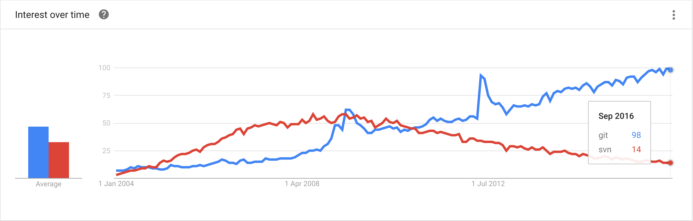
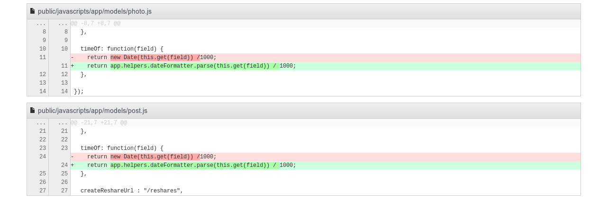
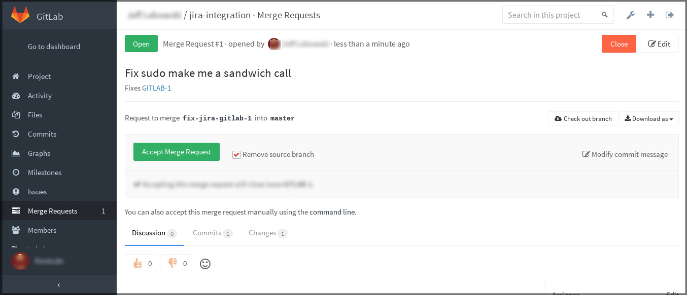

Introduction to version control with Git
Created by Joe Flynn / @prettyflyit
What is version control?
"the management of changes to documents, computer programs, large web sites, and other collections of information"
But why?
Why version control
Many developers, one codebase. One mistake, and the build is (possibly irrevocably) broken.
Version control ensures this can't happen, by offering a back-up plan for failure, whilst allowing several developers to work on separate components independently without fear of conflict.
Why version control
One developer may be developing a new feature, while another is fixing an unrelated bug.
Both developers may need to add or change code in the same files, in several parts of the file tree.
Without proper version control, this would be completely unmanageable.
Enter, Git

Git is the de-facto standard for version control in a multi-user development project, offering security, flexibility, and most importantly, performance.
Performance
The algorithms implemented inside Git take advantage of deep knowledge about common attributes of real source code file trees, how they are usually modified over time and what the access patterns are.
Security
The content of the files, as well as the true relationships between them, in the Git repository are secured with a cryptographically secure hashing algorithm called SHA1.
This protects the code and the change history against both accidental and malicious change and ensures that the history is fully traceable.
Flexibility
Git is flexible in several respects: in support for various kinds of nonlinear development workflows, in its efficiency in both small and large projects and in its compatibility with many existing systems and protocols.
Repositories
A repository is a data structure used by Git to manage a set of files or information (usually code, but not always) as it changes over time.
Repositories
Your local repository consists of three trees maintained by Git.
The first one is your working directory which holds the actual files.
The second one is the index which acts as a staging area, and finally the head which points to the last commit you've made.
First, some basics.
There are many, MANY operations to learn when using Git. Some are extremely powerful, and should only be used by advanced users
We won't be looking at those just yet....
Git Init
Initialising a repository is a fairly simple operation, but the first you should do on any new project.
Create a new directory, navigate to it, and use git init to initialise it as an empty repository
$ mkdir tech103
$ cd tech103
$ git init
Git Clone
When joining a team, it's likely that the code already exists on a remote repository, in which case you clone the repository to your local machine.
Like before, create a new directory and navigate to it, but this time, use the git clone command to create a local copy of it!
$ mkdir tech103
$ cd tech103
$ git clone https://gitlab.com/Tech103/Wizards/tech103.git
Git Clone
When cloning a remote repository, you don't just get the current version, you also get a complete history of every change made by every developer who modified it.
Ever.
Git History - Why is it important?
- Traceability - If something goes wrong, it's easy to trace down where, how and when.
- It helps with documentation - When documenting software, the Git history allows us to form a chronological view of the development process.
- All team members can follow progress easily.
Branching
Once you have a copy of the repository on your machine, the next thing to do before working on any features is create a branch.
Branches are used to develop features isolated from each other.
Git Checkout from master
The master branch is the "default" branch when you create a repository. Use other branches for development and merge (more later) them back to the master branch upon completion.
$ git checkout master
$ git checkout -b tech103branch
This creates a virtual copy of the master branch, but in a separate working tree, so your work is isolated from the master.
Git Checkout specific branch
Sometimes, you may need to make changes to a branch that hasn't yet been merged into master.
Perhaps a pull request (...more later) needs modified, after you've started a new feature (on a new branch, of course....)
In this situation, you can checkout the specific branch to work on
$ git checkout hotfix_001
Staging
As you begin working on new features, you may find yourself adding new files to the repository.
In this case, you are effectively 'staging' these files, before you commit (...more later) them to your branch.
$ git add 'filename'
Why Stage?
Staging allows you to selectively add certain files to your next commit, whilst leaving the rest out of the commit.
You may have made changes in several files, but you only want one of those files to be added to the branch, and scrap the rest.
In this scenario, you can stage the files you want to keep in the index, and throw away the rest after committing.
Git Commit
Once you're happy with the changes in your staging area, you commit them to your branch.
Committing changes is a way of saying "I'm happy with this, this can go to master someday...".
Rolling back commits is a tedious process, so make sure you're 100% with the changes before committing!
$ git commit -m 'Adding feature to process x in the y system'
Git Commit Messages
Remember our Git History? Here's where it comes from. Every commit should have a descriptive message describing what the change is for.
NB: Miscellaneous Changes is not a good message!
The -m flag when using git commit tells Git that the commit message follows, so it won't prompt for it.
Multiple Commits
Once you do a git commit, it's important to note that your changes are now at your head, but are not yet on the remote branch.
This means you can make more than one commit before finally pushing (...more later) your changes to the remote branch.
Multiple Commits
Multiple commits are no bad thing, in fact, they provide a descriptive history of change... just don't go nuts.
Fixed a spelling mistake is a pointless commit, unless it's the last one you plan to make before pushing.
Git Pull
During the interim between getting the master branch, and developing your feature, some changes may have made their way into the master branch which are not yet on your branch.
Before pushing your changes, it's important to ensure your new code still works with whatever changes have been made to the master branch.
This is where git pull comes in handy.
$ git pull origin master
Git Pull
When you pull master into your branch, you are ensuring your local is in tandem with the master branch, so you can run your tests again to make sure it still works.
For the most-part, Git will auto merge the changes to master with your branch, whilst preserving your changed code.
However, from time to time, conflicts may arise.
Merge Conflicts
A merge conflict can occur if two developers have made conflicting changes to the same piece of code in a file.
These will have to be resolved before you can push your changes, and it's the responsibility of the developer who has made changes which are not yet in master to fix them!
Usually these conflicts can be small things, and can be resolved reasonably easily. Usually.
Git Diff
When you attempt to push your changes, Git will list those files where merge conflicts exist, but to see a true difference, we use the git diff command.
$ git diff tech103branch master
From here, you can see where the conflicts in your branch are, and amend them accordingly.
Git Push
To push your commits to the remote branch, we use the git push command.
This takes all the commits from your local index and pushes them to the remote version of the branch on the server.
$ git push origin tech103branch
Pull Requests
Once you have pushed your changes to the remote version of your branch, and you're happy your feature is finished (including necessary unit and integration tests!), it's time to raise a pull request!
Pull Requests
A pull request gives the other developers in your team a chance to review your changes, and determine if they can go into the master branch.
Whether you're using GitLab, GitHub, Bitbucket, or any other repository management suite, a pull request largely takes the same format.
Git will note all the differences between your branch, and the current master, and highlight the changes for your team to view.
What's the diff?

This is where Git really becomes useful. The rest of your team can see quickly and easily all your changes, and cast a second (or third, fourth, etc) pair of eyes over them to make sure they work and won't break the build!
Who's Responsible?

In general, there will be one (or more) people with the ability to merge to master, and are usually senior developers.
And finally...
Once they have reviewed the changes, they can either merge the request, and your feature (or fix) is now in master, or comment on changes you need to make before they'll merge it!
Once it's merged.... move on to the next feature!